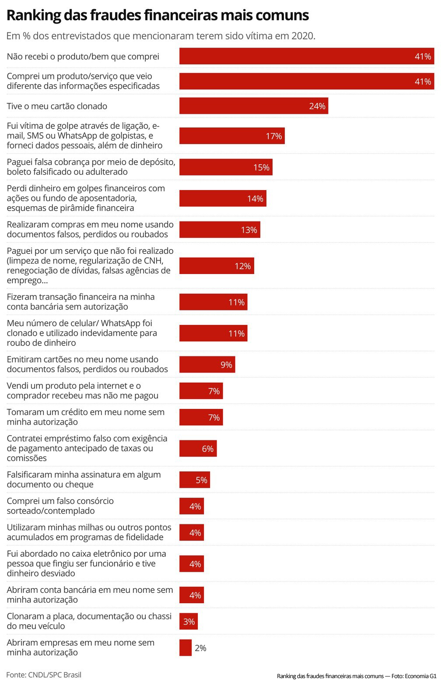

No dia 24 de junho de 2021, o site G1 da globo.com publicou uma matéria na página Economina sobre o ranking das fraudes financeiras mais recorrentes no Brasil. Uma pesquisa recente feita pela Confederação Nacional De Dirigentes Lojistas – CNDL e Serviço De Proteção Ao Crédito - SPC (2021), entre 15 de abril e 30 de abril de 2021, foram entrevistados 949 internautas com idade igual ou maior de 18 anos, todas classes econômicas, todas capitais.
Os resultados obtidos em %(percentual) dos entrevistados pela pesquisa são:
